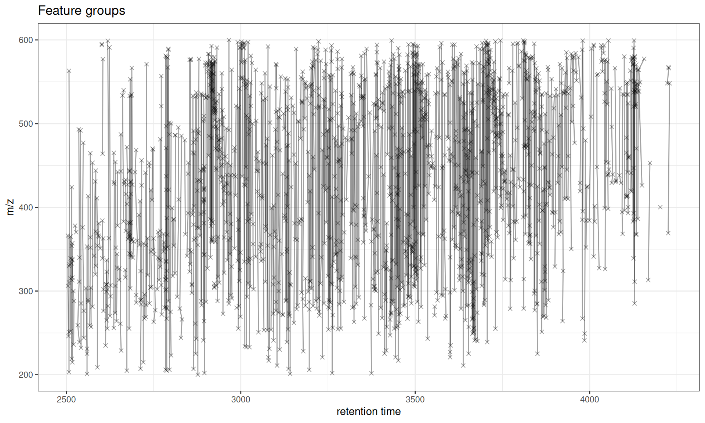
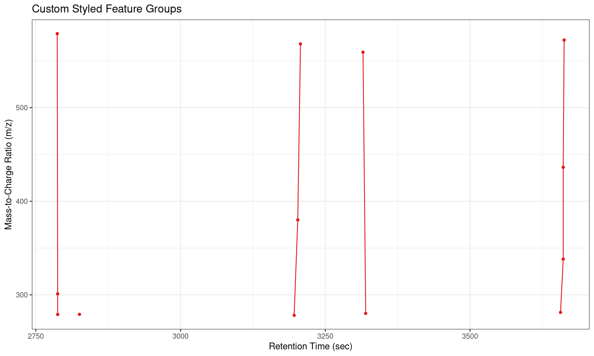
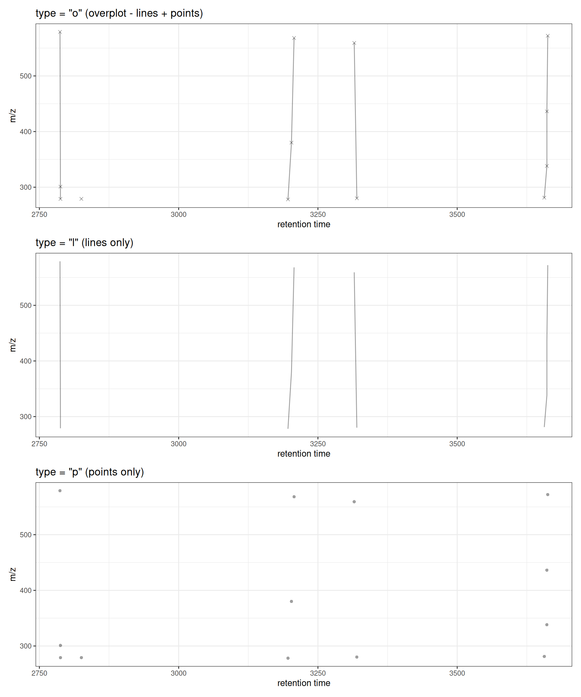
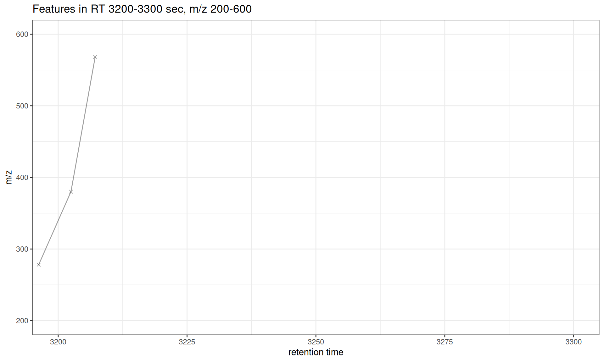
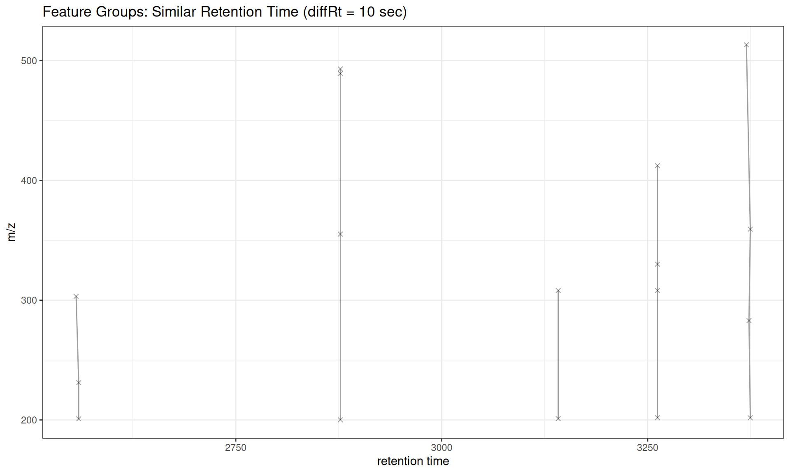
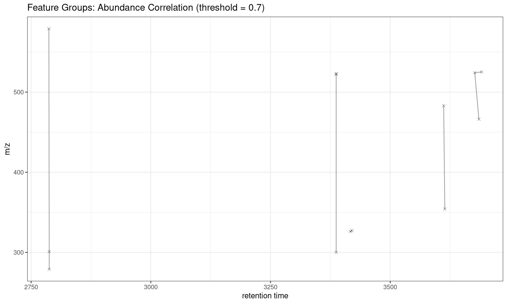
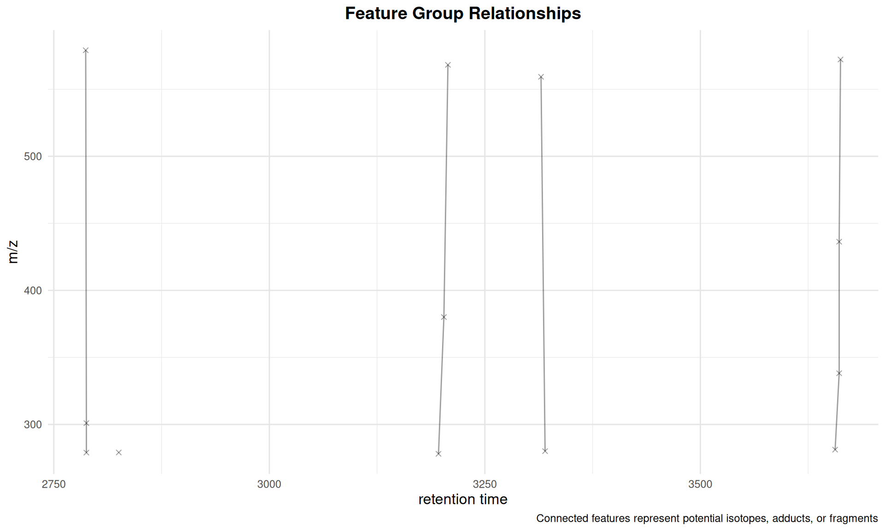
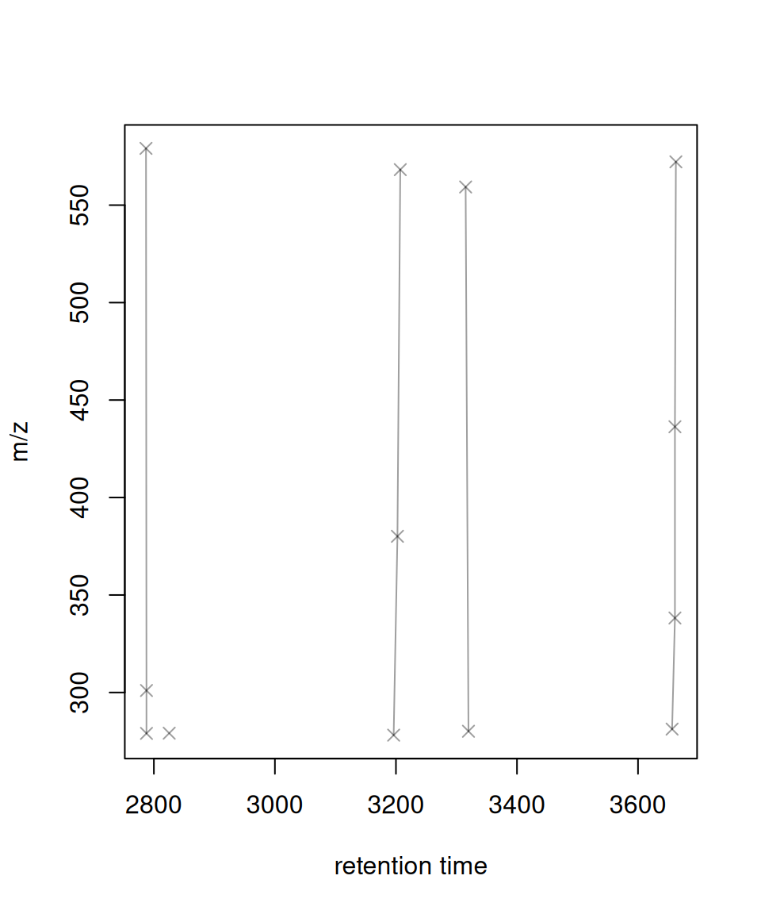
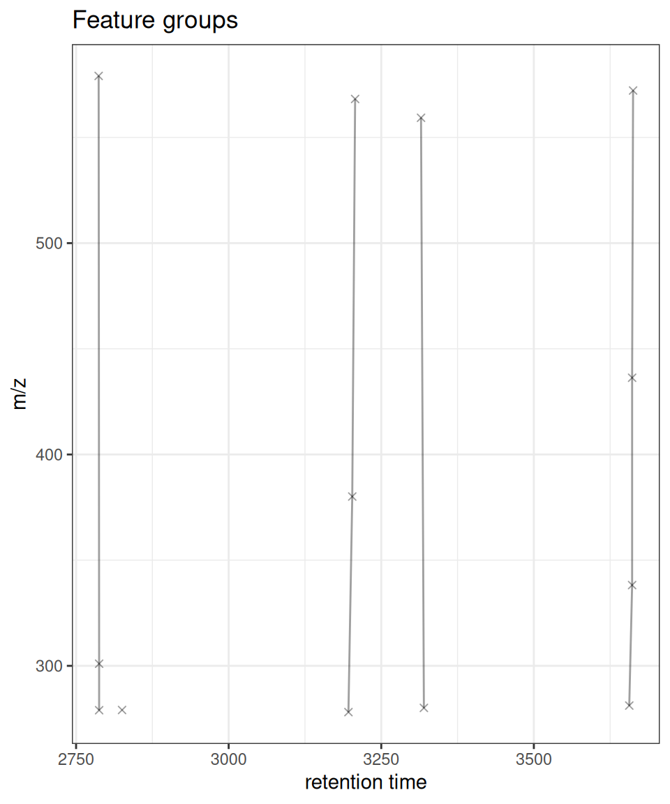

library(xcms)
library(xcmsVis)
library(MsExperiment)
library(MsFeatures)
library(ggplot2)
library(BiocParallel)
library(patchwork)
# Configure for serial processing
register(SerialParam())Introduction
This vignette covers the final step in the XCMS metabolomics workflow: feature grouping. After retention time alignment, these functions help you:
- Visualize relationships between features
- Identify isotopes, adducts, and fragments
- Assess feature annotation quality
- Create publication-ready feature network plots
XCMS Workflow Context
┌─────────────────────────────────────┐
│ 1. Raw Data Visualization │
│ 2. Peak Detection │
│ 3. Peak Correspondence │
│ 4. Retention Time Alignment │
├─────────────────────────────────────┤
│ 5. FEATURE GROUPING ← YOU ARE HERE
└─────────────────────────────────────┘What is Feature Grouping?
Feature grouping identifies features that likely represent the same compound. After feature detection and correspondence, groupFeatures() connects features that may be:
- Isotopes: M+1, M+2 isotopic peaks
- Adducts: [M+H]+, [M+Na]+, [M+K]+, etc.
- Fragments: In-source fragmentation products
- Correlated features: Compounds with similar abundance patterns
The gplotFeatureGroups() function visualizes these relationships by plotting features connected by lines within each group across retention time and m/z dimensions.
Functions Covered
-
gplotFeatureGroups(): Visualize feature group relationships in RT/m/z space
Setup
Load and Process Data
Feature grouping requires a complete XCMS workflow: peak detection, correspondence, retention time alignment, re-correspondence, and then feature grouping.
# Load example data
cdf_files <- dir(system.file("cdf", package = "faahKO"),
recursive = TRUE, full.names = TRUE)[1:3]
# Create XcmsExperiment
xdata <- readMsExperiment(spectraFiles = cdf_files)
# Add sample metadata
sampleData(xdata)$sample_name <- basename(cdf_files)
sampleData(xdata)$sample_group <- c("KO", "KO", "WT")
cat("Loaded", length(fileNames(xdata)), "files\n")
#> Loaded 3 filesComplete XCMS Workflow
# 1. Peak detection
cwp <- CentWaveParam(peakwidth = c(20, 80), ppm = 25, noise = 1000)
xdata <- findChromPeaks(xdata, param = cwp)
cat("Detected", nrow(chromPeaks(xdata)), "peaks\n")
#> Detected 3385 peaks
# 2. Peak grouping (correspondence)
pdp <- PeakDensityParam(sampleGroups = sampleData(xdata)$sample_group,
minFraction = 0.5, bw = 30)
xdata <- groupChromPeaks(xdata, param = pdp)
cat("Grouped into", nrow(featureDefinitions(xdata)), "features\n")
#> Grouped into 1934 features
# 3. Retention time alignment
xdata <- adjustRtime(xdata, param = ObiwarpParam())
# 4. Re-group after alignment
xdata <- groupChromPeaks(xdata, param = pdp)
cat("After alignment:", nrow(featureDefinitions(xdata)), "features\n")
#> After alignment: 1934 features
# 5. Group features (identify related features)
xdata <- groupFeatures(xdata, param = SimilarRtimeParam(diffRt = 20))
cat("Identified", length(unique(featureGroups(xdata))), "feature groups\n")
#> Identified 604 feature groupsBasic Feature Group Visualization
The default plot shows all feature groups, with features connected by lines within each group:
gplotFeatureGroups(xdata)
Interpretation
- Points: Individual features (at their median RT and m/z across samples)
- Lines: Connect features within the same group
- Groups: Represent features likely from the same compound (isotopes, adducts, etc.)
Filtering to Specific Feature Groups
You can visualize specific feature groups of interest:
# Get all feature group IDs
all_groups <- unique(featureGroups(xdata))
cat("Feature groups:", head(all_groups, 10), "\n")
#> Feature groups: FG.0001 FG.0002 FG.0003 FG.0004 FG.0005 FG.0006 FG.0007 FG.0008 FG.0009 FG.0010
# Plot first 5 groups
gplotFeatureGroups(xdata, featureGroups = all_groups[1:5]) +
ggtitle("First 5 Feature Groups")
Customization
Custom Styling
# Get first 5 feature groups for clearer visualization
all_groups <- unique(featureGroups(xdata))
gplotFeatureGroups(xdata,
featureGroups = all_groups[1:5],
col = "#E31A1C", # Red color
pch = 16, # Solid circles
xlab = "Retention Time (sec)",
ylab = "Mass-to-Charge Ratio (m/z)",
main = "Custom Styled Feature Groups")
Different Plot Types
The type parameter controls whether to show lines, points, or both:
# Use subset of feature groups for clearer visualization
fg_subset <- all_groups[1:5]
# Plot with lines and points (default)
p1 <- gplotFeatureGroups(xdata, featureGroups = fg_subset, type = "o") +
ggtitle('type = "o" (overplot - lines + points)')
# Plot with lines only
p2 <- gplotFeatureGroups(xdata, featureGroups = fg_subset, type = "l") +
ggtitle('type = "l" (lines only)')
# Plot with points only
p3 <- gplotFeatureGroups(xdata, featureGroups = fg_subset, type = "p", pch = 16) +
ggtitle('type = "p" (points only)')
# Combine plots
p1 / p2 / p3
Zooming to Specific Regions
Use xlim and ylim to focus on specific retention time or m/z ranges:
# Focus on features between 3200-3300 seconds RT and specific feature groups
gplotFeatureGroups(xdata,
featureGroups = fg_subset,
xlim = c(3200, 3300),
ylim = c(200, 600)) +
ggtitle("Features in RT 3200-3300 sec, m/z 200-600")
Interactive Visualization
Convert to interactive plotly plot for exploration:
library(plotly)
# Use subset for better interactivity
p <- gplotFeatureGroups(xdata, featureGroups = fg_subset)
ggplotly(p)Understanding Feature Groups
Feature groups represent features that are likely derived from the same compound. Common grouping parameters:
Similar Retention Time
# Group features with similar retention times (likely isotopes/adducts)
xdata_rt <- groupFeatures(xdata, param = SimilarRtimeParam(diffRt = 10))
cat("SimilarRtimeParam (diffRt=10):",
length(unique(featureGroups(xdata_rt))), "groups\n")
#> SimilarRtimeParam (diffRt=10): 609 groups
# Show first 5 groups
fg_rt <- unique(featureGroups(xdata_rt))
gplotFeatureGroups(xdata_rt, featureGroups = fg_rt[1:5]) +
ggtitle("Feature Groups: Similar Retention Time (diffRt = 10 sec)")
Abundance Correlation
# Group features with correlated abundances across samples
xdata_cor <- groupFeatures(xdata, param = AbundanceSimilarityParam(threshold = 0.7))
cat("AbundanceSimilarityParam (threshold=0.7):",
length(unique(featureGroups(xdata_cor))), "groups\n")
#> AbundanceSimilarityParam (threshold=0.7): 1834 groups
# Show first 5 groups
fg_cor <- unique(featureGroups(xdata_cor))
gplotFeatureGroups(xdata_cor, featureGroups = fg_cor[1:5]) +
ggtitle("Feature Groups: Abundance Correlation (threshold = 0.7)")
Use Cases
Isotope Pattern Identification
Features grouped by similar RT and m/z spacing may represent isotope patterns (M, M+1, M+2).
Adduct Identification
Features with similar RT but different m/z values that correlate in abundance may be different adducts of the same compound.
Quality Control
Visualize feature groups to:
- Verify grouping parameters are appropriate
- Identify over-grouping (too many features in one group)
- Identify under-grouping (features that should be grouped but aren’t)
Publication Figures
Create clean, customizable figures showing compound annotation:
gplotFeatureGroups(xdata, featureGroups = fg_subset) +
theme_minimal() +
theme(
plot.title = element_text(hjust = 0.5, face = "bold", size = 14),
axis.title = element_text(size = 12),
panel.grid.major = element_line(color = "gray90")
) +
labs(
title = "Feature Group Relationships",
caption = "Connected features represent potential isotopes, adducts, or fragments"
)
Summary
Functions Covered
| Function | Purpose | Input |
|---|---|---|
gplotFeatureGroups() |
Visualize feature group relationships | XcmsExperiment, XCMSnExp |
Use Cases
- Compound annotation: Identify isotopes, adducts, and fragments
- Quality control: Verify feature grouping quality
- Method development: Optimize groupFeatures parameters
- Publication: Create network plots of feature relationships
Workflow Complete!
You’ve now completed the full XCMS visualization workflow:
✓ 1. Raw Data Visualization
✓ 2. Peak Detection
✓ 3. Peak Correspondence
✓ 4. Retention Time Alignment
✓ 5. Feature GroupingComparison with Original XCMS
Original XCMS Version
# XCMS original (base R graphics)
plotFeatureGroups(xdata, featureGroups = c("FG.0001", "FG.0002", "FG.0003", "FG.0004", "FG.0005"))
xcmsVis ggplot2 Version
# xcmsVis version (ggplot2)
gplotFeatureGroups(xdata, featureGroups = c("FG.0001", "FG.0002", "FG.0003", "FG.0004", "FG.0005"))
API Differences
Unlike the original XCMS
plotFeatureGroups(), the ggplot2 version does not havexlab,ylab, ormainparameters. Instead, use ggplot2’slabs()function to customize labels after plot creation:# Customize labels with labs() gplotFeatureGroups(xdata, featureGroups = c("FG.0001", "FG.0002")) + labs(x = "Retention Time (s)", y = "Mass/Charge", title = "My Custom Title")This follows ggplot2 conventions and makes the API more consistent with the broader ggplot2 ecosystem.
Session Info
sessionInfo()
#> R version 4.5.2 (2025-10-31)
#> Platform: x86_64-pc-linux-gnu
#> Running under: Ubuntu 24.04.3 LTS
#>
#> Matrix products: default
#> BLAS: /usr/lib/x86_64-linux-gnu/openblas-pthread/libblas.so.3
#> LAPACK: /usr/lib/x86_64-linux-gnu/openblas-pthread/libopenblasp-r0.3.26.so; LAPACK version 3.12.0
#>
#> locale:
#> [1] LC_CTYPE=C.UTF-8 LC_NUMERIC=C LC_TIME=C.UTF-8
#> [4] LC_COLLATE=C.UTF-8 LC_MONETARY=C.UTF-8 LC_MESSAGES=C.UTF-8
#> [7] LC_PAPER=C.UTF-8 LC_NAME=C LC_ADDRESS=C
#> [10] LC_TELEPHONE=C LC_MEASUREMENT=C.UTF-8 LC_IDENTIFICATION=C
#>
#> time zone: UTC
#> tzcode source: system (glibc)
#>
#> attached base packages:
#> [1] stats graphics grDevices utils datasets methods base
#>
#> other attached packages:
#> [1] plotly_4.11.0 patchwork_1.3.2 ggplot2_4.0.0
#> [4] MsFeatures_1.18.0 MsExperiment_1.12.0 ProtGenerics_1.42.0
#> [7] xcmsVis_0.99.22 xcms_4.8.0 BiocParallel_1.44.0
#>
#> loaded via a namespace (and not attached):
#> [1] DBI_1.2.3 rlang_1.1.6
#> [3] magrittr_2.0.4 clue_0.3-66
#> [5] MassSpecWavelet_1.76.0 matrixStats_1.5.0
#> [7] compiler_4.5.2 vctrs_0.6.5
#> [9] reshape2_1.4.4 stringr_1.6.0
#> [11] pkgconfig_2.0.3 MetaboCoreUtils_1.18.0
#> [13] crayon_1.5.3 fastmap_1.2.0
#> [15] XVector_0.50.0 labeling_0.4.3
#> [17] rmarkdown_2.30 preprocessCore_1.72.0
#> [19] purrr_1.2.0 xfun_0.54
#> [21] MultiAssayExperiment_1.36.0 jsonlite_2.0.0
#> [23] progress_1.2.3 DelayedArray_0.36.0
#> [25] parallel_4.5.2 prettyunits_1.2.0
#> [27] cluster_2.1.8.1 R6_2.6.1
#> [29] stringi_1.8.7 RColorBrewer_1.1-3
#> [31] limma_3.66.0 GenomicRanges_1.62.0
#> [33] Rcpp_1.1.0 Seqinfo_1.0.0
#> [35] SummarizedExperiment_1.40.0 iterators_1.0.14
#> [37] knitr_1.50 IRanges_2.44.0
#> [39] BiocBaseUtils_1.12.0 Matrix_1.7-4
#> [41] igraph_2.2.1 tidyselect_1.2.1
#> [43] abind_1.4-8 yaml_2.3.10
#> [45] doParallel_1.0.17 codetools_0.2-20
#> [47] affy_1.88.0 lattice_0.22-7
#> [49] tibble_3.3.0 plyr_1.8.9
#> [51] Biobase_2.70.0 withr_3.0.2
#> [53] S7_0.2.0 evaluate_1.0.5
#> [55] Spectra_1.20.0 pillar_1.11.1
#> [57] affyio_1.80.0 BiocManager_1.30.26
#> [59] MatrixGenerics_1.22.0 foreach_1.5.2
#> [61] stats4_4.5.2 MSnbase_2.36.0
#> [63] MALDIquant_1.22.3 ncdf4_1.24
#> [65] generics_0.1.4 S4Vectors_0.48.0
#> [67] hms_1.1.4 scales_1.4.0
#> [69] glue_1.8.0 lazyeval_0.2.2
#> [71] tools_4.5.2 mzID_1.48.0
#> [73] data.table_1.17.8 QFeatures_1.20.0
#> [75] vsn_3.78.0 mzR_2.44.0
#> [77] fs_1.6.6 XML_3.99-0.20
#> [79] grid_4.5.2 impute_1.84.0
#> [81] tidyr_1.3.1 crosstalk_1.2.2
#> [83] MsCoreUtils_1.21.0 PSMatch_1.14.0
#> [85] cli_3.6.5 viridisLite_0.4.2
#> [87] S4Arrays_1.10.0 dplyr_1.1.4
#> [89] AnnotationFilter_1.34.0 pcaMethods_2.2.0
#> [91] gtable_0.3.6 digest_0.6.37
#> [93] BiocGenerics_0.56.0 SparseArray_1.10.1
#> [95] htmlwidgets_1.6.4 farver_2.1.2
#> [97] htmltools_0.5.8.1 lifecycle_1.0.4
#> [99] httr_1.4.7 statmod_1.5.1
#> [101] MASS_7.3-65